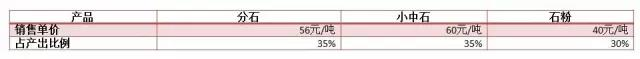
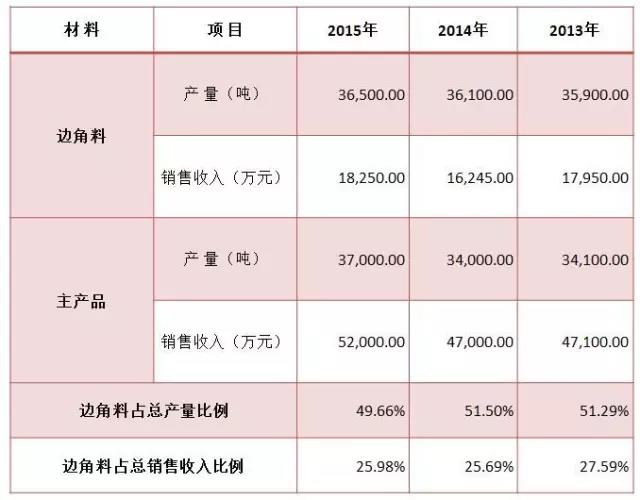

天职国际会计师事务所
联产品与副产品的区分
天职研究20160706
案例背景：
企业在生产过程中，可能产生多种产品，其中就包括联产品和副产品。在成本会计中，联产品，一般是指使用同种原料，经过同一生产过程同时生产出来的两种或两种以上的主要产品。副产品，一般是指在同一生产过程中，使用同种原料，在生产主产品的同时附带生产出来的非主要产品。联产品是企业的主要产品，是企业生产活动的主要目标；销售价格较高，对企业收入有较大贡献。副产品是企业的次要产品，不是企业生产活动的主要目标；销售价格较低，销售收入大大低于主产品，在企业总销售收入中的比重很小。两者不是固定的关系，是可以相互转化的，例如，石油工业的煤油曾作为联产品, 汽油作为副产品, 随着石油产品技术和市场的发展, 汽油和加热用油两者相对来说都是重要的, 都作为联产品看待。
在我国企业会计准则下，并未对有关联产品、副产品进行明确规定。在国际财务报告准则下，《国际会计准则第2号——存货》第14段的规定：
“14 同一生产过程可能同时生产一种以上的产品。联产品的生产，或既有主产品又有副产品的生产就属这方面的例子。如果每种产品的加工成本不能单独地加以辨认，那么这些成本就应在合理和一致的基础上在产品之间进行分配。例如，在产品可以单独辨认的生产过程中或在生产结束时，可以每种产品相应的销售价值为基础进行分配。大多数副产品就其性质来说，价值不高。在这种情况下，它们通常以可变现净值计量，且该价值应从主产品的成本中扣除。这样处理的结果是，主产品的账面金额与其成本不会有显著差异。”
除上述段落以外，《国际会计准则第2号》并未对联产品和副产品进行定义，也未对二者如何区分提供进一步指引。根据上述段落，联产品与副产品的成本分配主要是以重要性原则为基础进行处理，这是一个需要专业判断、且会计准则标准不清晰的事项；一旦做出了判断，后续会计处理准则是明确的。
联产品是企业的主要产品，具有较高的经济价值，其销售价格较高。因此，根据重要性原则，在对联合生产成本进行分配以计算出各种联产品成本时，应采用比较准确、详细的方法进行分配和计算，故以每种产品的相对销售价格为基础对实际发生的成本进行分配，实务中，如《企业产品成本核算制度（试行）》规定，企业应根据生产经营特点和联产品、副产品的工艺要求，选择系数分配法、实物量分配法、相对销售价格分配法等合理的方法分配联合生产成本。而副产品是指在主要产品生产过程中附带生产出来的非主要产品。副产品不是企业生产活动的主要目的，价值比较低，对企业的收入影响较小。根据重要性原则，在分配联合生产成本时，通常是将副产品直接按一定标准计价，然后从联合生产成本中扣除即可计算出主要产品成本。实务中，副产品的计价方法主要有副产品不负担联合生产成本法、副产品按计划成本计价法、副产品按售价减去销售费用和销售税金后的余额计价法等，都属于简化处理的方法，计算较粗略。
在区分联产品和副产品的过程中，重要性原则是区分的重要基础。根据《企业会计准则第30号——财务报表列报》（2014年修订），重要性是指在合理预期下，如果财务报表某项目的省略或错报会影响使用者据此作出经济决策的，则该项目就具有重要性。企业在进行重要性判断时，应当根据所处环境，从项目的性质和金额大小两方面予以判断：一方面，应当考虑该项目的性质是否属于企业日常活动、是否显著影响企业的财务状况、经营成果和现金流量等因素；另一方面，判断项目金额大小的重要性，应当通过单项金额占资产总额、负债总额、所有者权益总额、营业收入总额、营业成本总额、净利润、综合收益总额等直接相关或所属报表单列项目金额的比重加以确定。企业对于各个项目的重要性判断标准一经确定，不得随意变更。
|
案例情景
案例1
A公司为采矿企业，在采矿过程中，一般会产生如下几种产品：

A公司对每种产品均采用严格的管理政策，每种产品均为了单独销售，均有单独的销售人员，采用同等重要的销售政策，对每种产品的产量、销售数量、销售价格等均能准确计量。
问题：上述三种产品中哪些作为联产品，哪些作为副产品？
案例2
B公司为钢材磨具生产企业，在以标准钢板为主要材料，经切割、打磨等工序生产出客户定制磨具过程中，产生不规则钢板边角料。B公司近三年磨具产品及边角料情况如下：

问题：上述边角料应作为联产品还是副产品核算？
案例分析
案例1分析
案例1中，分石、小中石、石粉三种产品的产量分别为35%、35%和30%，各自产品相当，占总产品比例均具有重要性；三种产品的单位销售价格也无明显差异，三种产品的价值较高，均具有重要性。同时，A公司对三种产品的持有目的均为正常销售，具有单独的管理政策。此外，A公司对三种产品均能准确核算，以相对销售价格分摊总成本并不会增加额外成本，符合成本效益原则。综合考虑，三种产品在持有目的、性质和价值上均具有重要性，因此，应作为联产品，以三种产品的相对销售价格为基础，对所产生的总成本进行分配。
案例2分析
案例2中，虽然边角料在生产过程中属于主产品产生的辅料，并非B公司以特定目的生产的产品。但是，由于边角料的产量较高，2013年至2015年占B公司产品产量的51.29%、51.50%和49.66%；同时，虽然边角料的单位销售价格相对于主产品单价较低，但其较高的产量提高了其销售收入，2013年至2015年占B公司总销售收入的27.59%、25.69%和25.98%。因此，该边角料从价值上看是具有重要性的，如果将其作为副产品，以实际销售价格直接从实际总成本中扣除，将造成主产品和副产品的实际毛利偏离，从而影响财务报表使用者的经济决策。同时，B公司对边角料的产量、销售收入等均能准确计量，对其准确核算不会增加额外成本。总之，根据重要性原则及成本效益考虑，B公司应将边角料作为主产品核算，以主产品和边角料的相对销售价格为基础分摊实际总成本。
|
案例小结
综上所述，企业同时生产多种可单独销售的产品时，将哪种产品作为联产品，哪种产品作为副产品进行会计核算，应以会计实质为基础，考虑重要性原则和成本效益原则，根据企业的具体事实和情况，应用职业判断进行合理区分，其最终目的是为财务报表使用者作出经济决策提供有用的信息。